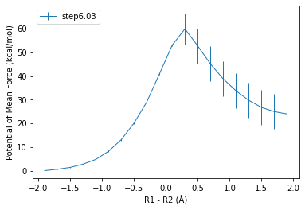
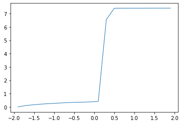
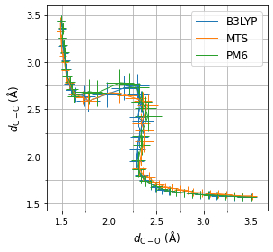

import sys
import numpy as np
from scipy import stats
import matplotlib.pyplot as plt
from matplotlib.ticker import AutoMinorLocator, LogLocator, NullFormatter
from glob import glob
from sklearn.utils import resample
import pymbar
sys.path.append("/home/panxl/scripts/")
from mbar_pmf import mbar_pmf
---------------------------------------------------------------------------
ModuleNotFoundError Traceback (most recent call last)
Cell In[2], line 3
1 import pymbar
2 sys.path.append("/home/panxl/scripts/")
----> 3 from mbar_pmf import mbar_pmf
ModuleNotFoundError: No module named 'mbar_pmf'
pwd
'/ourdisk/hpc/ccats/dont_archive/van/claisen_rearrangement/pm3/mbar'
# from glob import glob
n_windows = 21
val_kn = []
for i in range(n_windows):
fnames = sorted(glob('../%02d/step6.0?_equilibration.cv' % i))
# fnames = sorted(glob('../%02d/all_step6.cv' % i))
arrays = [np.loadtxt(f, usecols=1)[::] for f in fnames[:]]
val_kn.append(np.concatenate(arrays))
val0_k = np.linspace(-2.00, 2.00, n_windows)
K_k = np.ones(n_windows) * 300.0
val_min = -2.00
val_max = 2.00
nbins = n_windows - 1
for i in range(n_windows):
print("Window %02d:" % i, pymbar.timeseries.subsampleCorrelatedData(val_kn[i], conservative=True))
Window 00: range(0, 1000)
Window 01: range(0, 1000)
Window 02: range(0, 1000)
Window 03: range(0, 1000)
Window 04: range(0, 1000)
Window 05: range(0, 1000)
Window 06: range(0, 1000)
Window 07: range(0, 1000)
Window 08: range(0, 1000)
Window 09: range(0, 1000)
Window 10: range(0, 1000)
Window 11: range(0, 1000)
Window 12: range(0, 1000)
Window 13: range(0, 1000)
Window 14: range(0, 1000)
Window 15: range(0, 1000)
Window 16: range(0, 1000)
Window 17: range(0, 1000)
Window 18: range(0, 1000)
Window 19: range(0, 1000)
Window 20: range(0, 1000)
# mbar = mbar_pmf(val_kn, val0_k, K_k, 300.0, u_kn=np.array(ene_pm3))
mbar = mbar_pmf(val_kn, val0_k, K_k, 300.0)
K (total states) = 21, total samples = 21000
N_k =
[1000 1000 1000 1000 1000 1000 1000 1000 1000 1000 1000 1000 1000 1000
1000 1000 1000 1000 1000 1000 1000]
There are 21 states with samples.
Initial dimensionless free energies with method BAR
f_k =
[ 0. 1.23072943 1.90991958 3.98925049 6.56050668 11.49828531
18.18114861 27.78548643 40.68764472 56.33533948 76.12567358 96.53454367
95.43924429 82.33588689 70.84715207 61.48702356 53.86286496 48.08497101
43.73961074 41.62979001 40.22636601]
Determining dimensionless free energies by Newton-Raphson / self-consistent iteration.
self consistent iteration gradient norm is 3.5123e-08, Newton-Raphson gradient norm is 1.843e-22
Choosing self-consistent iteration on iteration 0
self consistent iteration gradient norm is 2.9329e-08, Newton-Raphson gradient norm is 4.954e-22
Choosing self-consistent iteration for lower gradient on iteration 1
self consistent iteration gradient norm is 2.4564e-08, Newton-Raphson gradient norm is 2.7089e-21
Newton-Raphson used on iteration 2
self consistent iteration gradient norm is 2.6017e-21, Newton-Raphson gradient norm is 6.8079e-22
Newton-Raphson used on iteration 3
self consistent iteration gradient norm is 5.7666e-22, Newton-Raphson gradient norm is 1.4436e-21
Choosing self-consistent iteration for lower gradient on iteration 4
Converged to tolerance of 6.045449e-15 in 5 iterations.
Of 5 iterations, 2 were Newton-Raphson iterations and 3 were self-consistent iterations
Final dimensionless free energies
f_k =
[ 0. 1.23072939 1.90991922 3.98925037 6.56050635 11.49828545
18.18114809 27.78548804 40.68764706 56.33533882 76.12567375 96.53454399
95.43924461 82.335887 70.84715192 61.48702342 53.86286502 48.08497313
43.73961265 41.62979212 40.22636814]
MBAR initialization complete.
# bin_centers, f_i, df_i, reweighting_entropy = mbar.get_pmf(val_min, val_max, nbins, u_kn=np.array(ene_pm3))
bin_centers, f_i, df_i, reweighting_entropy = mbar.get_pmf(val_min, val_max, nbins)
bin_centers, f_i, df_i, reweighting_entropy = mbar.get_pmf(val_min, val_max, nbins, uncertainties='from-specified', pmf_reference=f_i[:20].argmin())
np.savetxt("freefile_mbar0", np.column_stack((bin_centers, f_i, df_i)))
# initial0 = np.loadtxt("freefile_mbar0")
# initial1 = np.loadtxt("freefile_mbar1")
# initial2 = np.loadtxt("freefile_mbar2")
# initial3 = np.loadtxt("freefile_mbar3")
plt.xlabel("R1 - R2 (Å)")
plt.ylabel("Potential of Mean Force (kcal/mol)")
# plt.errorbar(initial0[:,0], initial0[:,1] - initial0[:10,1].min(), yerr=initial0[:,2], linewidth=1, label="0.0 - 43.2 ps")
# plt.errorbar(initial1[:,0], initial1[:,1] - initial1[:10,1].min(), yerr=initial1[:,2], linewidth=1, label="10.0 - 43.2 ps")
# plt.errorbar(initial2[:,0], initial2[:,1] - initial2[:10,1].min(), yerr=initial2[:,2], linewidth=1, label="20.0 - 43.2 ps")
# plt.errorbar(initial3[:,0], initial3[:,1] - initial3[:10,1].min(), yerr=initial3[:,2], linewidth=1, label="30.0- 43.2 ps")
plt.errorbar(bin_centers, f_i - f_i[:10].min(), yerr=df_i, linewidth=1, label="step6.00")
plt.legend(loc=2)
plt.savefig("claisen_pmf.png", dpi=300)
plt.show()
plt.errorbar(bin_centers, df_i, linewidth=1)
# print(round(initial0[:,1].max() - initial0[:10,1].min(),1), round(initial0[initial0[:,1].argmax()][2],1))
# print(round(initial1[:,1].max() - initial1[:10,1].min(),1), round(initial1[initial1[:,1].argmax()][2],1))
# print(round(initial2[:,1].max() - initial2[:10,1].min(),1), round(initial2[initial2[:,1].argmax()][2],1))
# print(round(initial3[:,1].max() - initial3[:10,1].min(),1), round(initial3[initial3[:,1].argmax()][2],1))
print(f_i.max() - f_i[:10].min(), df_i[f_i.argmax()])


59.98441608404634 6.547568955948204
print("Barrier Height (kcal/mol): %.2f" % (f_i.max() - f_i.min()))
print("Mean Uncertainty (kcal/mol): %.2f" % df_i.mean())
print("Max Uncertainty (kcal/mol): %.2f" % df_i.max())
print("Reweighting Entropy:\n", reweighting_entropy)
plt.plot(bin_centers, reweighting_entropy, '-o')
Barrier Height (kcal/mol): 22.19
Mean Uncertainty (kcal/mol): 0.21
Max Uncertainty (kcal/mol): 0.32
Reweighting Entropy:
[0.98755275 0.98322762 0.97817868 0.97397873 0.97047247 0.97193627
0.9674841 0.9565545 0.94920405 0.9526953 0.94769592 0.94194889
0.93486726 0.92338965 0.91284535 0.94230776 0.9410212 0.94476692
0.92496902 0.95116651 0.98433633 0.9859862 0.98409687 0.97703861
0.97673058 0.963039 0.95728095 0.93712396 0.9255638 0.93947758
0.96039662 0.98056637 0.97649532 0.97841222 0.97387657 0.97532941
0.97549961 0.9825743 0.98383075 0.98576527 0.98898408]
[<matplotlib.lines.Line2D at 0x2b96807ee220>]
bin_centers, f_i_rw, df_i_rw, reweighting_entropy = mbar.get_pmf(val_min, val_max, nbins, u_kn=np.array(ene_b3lyp), uncertainties='from-specified', pmf_reference=f_i[:10].argmin())
np.savetxt("freefile_mbar_wtp", np.column_stack((bin_centers, f_i_rw, df_i_rw)), fmt="%.2f %f %f")
np.savetxt("reweighting_entropy", np.column_stack((bin_centers, reweighting_entropy)), fmt="%.2f %f")
plt.xlabel("Reaction Coordinate (\AA)")
plt.ylabel("Potential of Mean Force (kcal/mol)")
# plt.errorbar(free_dft[:,0], free_dft[:,1], yerr=free_dft[:,2], linewidth=1, label="direct B3LYP")
plt.errorbar(bin_centers, f_i_rw - f_i_rw[0], yerr=df_i_rw, linewidth=1, label="PM3* -> B3LYP")
plt.legend()
<matplotlib.legend.Legend at 0x2af3ff5ff550>
likelihood_all = []
for i in range(100):
alpha = (i + 1) * 0.01
y_pred, sigma, likelihood = mbar.get_reweighted_tp(bin_centers, f_i_rw, reweighting_entropy, alpha)
likelihood_all.append(likelihood)
print(np.array(likelihood_all).max(), np.array(likelihood_all).argmax())
/home/panxl/.local/opt/miniforge3/lib/python3.8/site-packages/sklearn/gaussian_process/_gpr.py:509: ConvergenceWarning: lbfgs failed to converge (status=2):
ABNORMAL_TERMINATION_IN_LNSRCH.
Increase the number of iterations (max_iter) or scale the data as shown in:
https://scikit-learn.org/stable/modules/preprocessing.html
_check_optimize_result("lbfgs", opt_res)
-79.26687861459216 56
y_pred, sigma, likelihood = mbar.get_reweighted_tp(bin_centers, f_i_rw, reweighting_entropy, 0.57)
sigma2 = sigma + sigma[y_pred[:10].argmin()]
sigma2[y_pred[:10].argmin()] = 0.0
plt.xlabel("Reaction Coordinate (\AA)", fontsize=17)
plt.ylabel("Free Energy (kcal/mol)", fontsize=17)
# plt.errorbar(free_dft[:,0], free_dft[:,1] - free_dft[:10,1].min(), yerr=free_dft[:,2], linewidth=2.0, label="direct B3LYP")
plt.errorbar(bin_centers, f_i - f_i[:10].min(), yerr=df_i, linewidth=2.0, label="direct PM3")
#plt.errorbar(bin_centers, f_i_rw - y_pred[:10].min(), yerr=df_i_rw, linewidth=2.0, label=r"PM3 $\rightarrow$ B3LYP")
plt.errorbar(bin_centers, y_pred - y_pred[:10].min(), yerr=sigma2, linewidth=2.0, label=r"PM3 $\rightarrow$ B3LYP")
plt.legend(fontsize=13, loc=1)
#plt.ylim(-1, 26)
# print("Barrier Height DFT (kcal/mol): %.2f" % (free_dft[:,1].max() - free_dft[:10,1].min()))
print("Barrier Height (kcal/mol): %.2f" % (y_pred.max() - y_pred[:10].min()))
np.savetxt("freefile_mbar_wtp_gpr", np.column_stack((bin_centers, y_pred, sigma2)), fmt="%.2f %f %f")
plt.tight_layout()
# plt.savefig("sn2_pm3_pmf3.pdf")
Barrier Height (kcal/mol): 14.40
plt.xlabel("Reaction Coordinate (\AA)")
plt.ylabel("Reweighting Entropy")
plt.plot(bin_centers, reweighting_entropy, '-o')
print("Barrier Height (kcal/mol): %.2f" % (f_i_rw.max() - f_i_rw[:10].min()))
print("Mean Uncertainty (kcal/mol): %.2f" % df_i_rw.mean())
print("Reweighting Entropy:\n", reweighting_entropy)
Barrier Height (kcal/mol): 15.18
Mean Uncertainty (kcal/mol): 0.73
Reweighting Entropy:
[0.0042022 0.17591349 0.26959607 0.33809916 0.13919166 0.1749552
0.44556783 0.06160092 0.32306555 0.14709513 0.2719634 0.33749502
0.26249785 0.31425769 0.33395539 0.03141004 0.41425532 0.07729795
0.57703088 0.29377772 0.07788508 0.43623673 0.38462343 0.36412742
0.04208171 0.30866914 0.35420374 0.13924581 0.42640337 0.14708235
0.20265976 0.30483329 0.29931782 0.42626948 0.4114261 0.36705387
0.46260791 0.2578781 0.45447042]
n_images = 40
n_dims = 2
images_cm = np.zeros((n_images, n_dims*2))
images2_cm = np.zeros((n_images, n_dims*2))
images3_cm = np.zeros((n_images, n_dims*2))
images4_cm = np.zeros((n_images, n_dims*2))
window = 40
for i in range(n_images):
fnames = sorted(glob('../%02d/step6.00_equilibration_qt.cv' % i))
d1 = np.concatenate([np.loadtxt(f, usecols=1)[2001::] for f in fnames[:]])
d2 = np.concatenate([np.loadtxt(f, usecols=2)[2001::] for f in fnames[:]])
images_cm[i, 0] = ((d2 + d1)/2).mean()
images_cm[i, 1] = ((d2 - d1)/2).mean()
images_cm[i, 2] = ((d2 + d1)/2).std()
images_cm[i, 3] = ((d2 - d1)/2).std()
for i in range(n_images):
fnames = sorted(glob('/work/panxl/qmmm_mts/chorismate_mutase/pbc2/b3lyp2/%02d/step6.??_equilibration.cv' % i))
d1 = np.concatenate([np.loadtxt(f, usecols=1) for f in fnames[4:]])
d2 = np.concatenate([np.loadtxt(f, usecols=2) for f in fnames[4:]])
images2_cm[i, 0] = ((d2 + d1)/2).mean()
images2_cm[i, 1] = ((d2 - d1)/2).mean()
images2_cm[i, 2] = ((d2 + d1)/2).std()
images2_cm[i, 3] = ((d2 - d1)/2).std()
for i in range(n_images):
fnames = sorted(glob('../%02d/step6.00_equilibration.cv' % i))
d1 = np.concatenate([np.loadtxt(f, usecols=1) for f in fnames[:]])[2001:]
d2 = np.concatenate([np.loadtxt(f, usecols=2) for f in fnames[:]])[2001:]
images3_cm[i, 0] = ((d2 + d1)/2).mean()
images3_cm[i, 1] = ((d2 - d1)/2).mean()
images3_cm[i, 2] = ((d2 + d1)/2).std()
images3_cm[i, 3] = ((d2 - d1)/2).std()
# for i in range(n_images):
# fnames = sorted(glob('../../b3lyp_mts12_langevin_mid/%02d/step6.00_equilibration.cv' % i))
# d1 = np.concatenate([np.loadtxt(f, usecols=1) for f in fnames[:]])[:]
# d2 = np.concatenate([np.loadtxt(f, usecols=2) for f in fnames[:]])[:]
# images4_cm[i, 0] = ((d2 + d1)/2).mean()
# images4_cm[i, 1] = ((d2 - d1)/2).mean()
# images4_cm[i, 2] = ((d2 + d1)/2).std()
# images4_cm[i, 3] = ((d2 - d1)/2).std()
fig, ax = plt.subplots()
ax.set_aspect('equal', 'box')
ax.errorbar(images_cm[:, 0], images_cm[:, 1], xerr=images_cm[:, 2], yerr=images_cm[:, 3], fmt='-', linewidth=1, label="B3LYP")
ax.errorbar(images2_cm[:, 0], images2_cm[:, 1], xerr=images2_cm[:, 2], yerr=images2_cm[:, 3], fmt='-', linewidth=1, label="MTS")
ax.errorbar(images3_cm[:, 0], images3_cm[:, 1], xerr=images3_cm[:, 2], yerr=images3_cm[:, 3], fmt='-', linewidth=1, label="PM6")
# ax.errorbar(images4_cm[window:, 0], images4_cm[window:, 1], xerr=images4_cm[window:, 2], yerr=images4_cm[window:, 3], fmt='-', linewidth=1, label="PM6-1")
# ax.plot(images_cm[:, 0], images_cm[:, 1], '.-', linewidth=1, label="NEW")
# ax.plot(images2_cm[:, 0], images2_cm[:, 1], '.-', linewidth=1, label="OLD")
# ax.plot(images3_cm[:, 0], images3_cm[:, 1], '.-', linewidth=1, label="MTS 8fs/1fs End")
# ax.plot(images4_cm[:, 0], images4_cm[:, 1], '.-', linewidth=1, label="MTS 8fs/1fs Mid")
ax.set_xlabel("$d_\mathrm{C-O}$ (Å)", fontsize=12)
ax.set_ylabel("$d_\mathrm{C-C}$ (Å)", fontsize=12)
ax.set_xticks(np.linspace(1.5, 3.5, 5))
ax.set_yticks(np.linspace(1.5, 3.5, 5))
ax.xaxis.set_minor_locator(AutoMinorLocator(2))
ax.yaxis.set_minor_locator(AutoMinorLocator(2))
ax.legend(fontsize=12)
ax.set_aspect('equal', 'box')
ax.grid(b=None, which='both', axis='both')
# ax.plot(images2_cm[13, 0], images2_cm[13, 1], 'r*', linewidth=1, label="MTS")
# ax.plot(images2_cm[17, 0], images2_cm[17, 1], 'k*', linewidth=1, label="MTS")
fig.subplots_adjust(hspace=0.2)
fig.tight_layout()
# fig.savefig("pathway.pdf")

a = !grep EPtot ../00/step6.00_equilibration.mdout | head -501 | tail -500
epot = np.loadtxt(a, usecols=8)
a = !grep EPtot ../00/step6.00_equilibration_qt.mdout | head -501 | tail -500
epot1 = np.loadtxt(a, usecols=8)
plt.hist(epot, bins=40, density=False, alpha=0.5)
plt.hist(epot1, bins=40, density=False, alpha=0.5)
# plt.hist(epot2, bins=40, density=False, alpha=0.5)
# plt.hist(np.concatenate((epot, epot1)), bins=40, range=[-7000, -6600], density=False, alpha=0.5)
# plt.hist(epot3, bins=40, range=[-6800, -6400], density=False, alpha=0.5)
(array([ 1., 0., 0., 0., 1., 2., 1., 2., 7., 6., 9., 6., 14.,
13., 18., 20., 21., 23., 23., 26., 24., 18., 29., 32., 21., 17.,
22., 27., 17., 20., 23., 10., 11., 11., 7., 4., 3., 2., 5.,
4.]),
array([-136648.0706 , -136624.0909225, -136600.111245 , -136576.1315675,
-136552.15189 , -136528.1722125, -136504.192535 , -136480.2128575,
-136456.23318 , -136432.2535025, -136408.273825 , -136384.2941475,
-136360.31447 , -136336.3347925, -136312.355115 , -136288.3754375,
-136264.39576 , -136240.4160825, -136216.436405 , -136192.4567275,
-136168.47705 , -136144.4973725, -136120.517695 , -136096.5380175,
-136072.55834 , -136048.5786625, -136024.598985 , -136000.6193075,
-135976.63963 , -135952.6599525, -135928.680275 , -135904.7005975,
-135880.72092 , -135856.7412425, -135832.761565 , -135808.7818875,
-135784.80221 , -135760.8225325, -135736.842855 , -135712.8631775,
-135688.8835 ]),
<BarContainer object of 40 artists>)
a = !grep ESCF ../36/step6.00_equilibration.mdout | head -501 | tail -500
epot = np.loadtxt(a, usecols=1)
a = !grep ESCF ../36/step6.00_equilibration_qt.mdout | head -501 | tail -500
epot1 = np.loadtxt(a, usecols=1) / 0.9375
# a = !grep PM3ESCF ../00/step6.00_equilibration_320.mdout | head -501 | tail -500
# epot2 = np.loadtxt(a, usecols=1)
# a = !grep PM3ESCF ../00/step6.00_equilibration_330.mdout | head -501 | tail -500
# epot3 = np.loadtxt(a, usecols=1)
plt.hist(epot, bins=40, density=False, alpha=0.5, label="300")
plt.hist(epot1, bins=40, density=False, alpha=0.5, label="320")
# plt.hist(epot2, bins=40, density=False, alpha=0.5, label="320")
# plt.hist(epot3, bins=40, density=False, alpha=0.5, label="330")
# plt.hist(np.concatenate((epot[:len(epot1)], epot1)), bins=40, density=False, alpha=0.5)
# plt.hist(epot3, bins=40, range=[-6800, -6400], density=False, alpha=0.5)
plt.legend()
<matplotlib.legend.Legend at 0x2b8fd1259730>
kcat=2.3e-3 / 60
kb=1.3806452e-23 / 1000 / 4.184
h=6.6260701e-34 / 1000 / 4.184
T=298
R=8.314 / 1000 / 4.184
np.log((kcat*h)/(kb*T))*R*T
-23.464844749835493